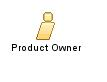

| Role: Product Owner |
 |
|
 |
||
| Additionally Performs | ||
|---|---|---|
This role is the one and only person responsible for managing the Product Backlog and ensuring the value of the work the development team performs. The Product Owner has the responsibility of defining what is the right product to build, determining the order in which features will be built, and making sure that the product actually works. The Product Owner is responsible for defining the features of the product to be developed by the team in terms of:
The Product Owner has the following responsibilities:
This person maintains the Product Backlog and ensures that it is visible to everyone. Everyone understands what items have the highest priority, so everyone on the development Team knows what will be worked on. The Product Owner is one person, not a committee. Committees may exist that advise or influence this person but team members who want to change an item's priority must first convince the Product Owner. In this way, organizational methods for setting priorities and requirements are influenced over time by this role. For the Product Owner to succeed, everyone in the organization must respect their decisions. No one is allowed to direct the development team member to work from a different set of priorities. Team members are not allowed to follow the direction of anyone whose direction does not coincide with the direction provided by the Product Owner. The Product Owner’s decisions are visible in the content and prioritization of the Product Backlog. This visibility requires that the Product Owner do their best. Visibility makes the role of Product Owner both a demanding and a rewarding experience. The Product Owner is responsible for the first of the three Scrum ceremonies, Sprint/Iteration Planning. The development team evaluates the prioritized Product Backlog, identifies the top priority items, and commits to completing the selected items during a Sprint/Iteration. These items become the basis for the Sprint/Iteration Backlog. In return for the development team's commitment to completing the selected tasks, the Product Owner commits that they will not introduce new requirements to the team during the Sprint/Iteration. Requirements are allowed to change but only outside the Sprint/Iteration. After the team begins a Sprint/Iteration, it remains focused on the goals of that Sprint/Iteration. The only exception to this rule is that a similar amount of work can be removed from a Sprint/Iteration to accommodate a new requirement. |
| Skills | The person who plays this role should have the following competencies:
A former Business Analyst or Project Manager is a good candidate for this role. |
|---|---|
| Assignment Approaches | Only one person can play this role for each development team. This person must be assigned to the project (the Product Owner is a member of the development team and should participate in the Daily Stand-up meeting). The workload associated with this role almost requires a full-time assignment. The Product Owner is:
Suggestions from Ken Schwaber's Scrum Guide:
|
| The Product Owner's commitment is essential to ensure the project success. By defining the product vision, they provide direction to the team. By externally promoting each Sprint/Iteration result, the Product Owner brings recognition and motivation to the team. |
This program and the accompanying materials are made available under the |